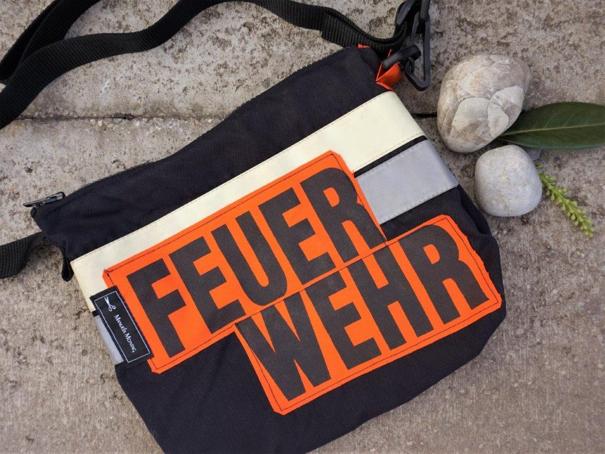
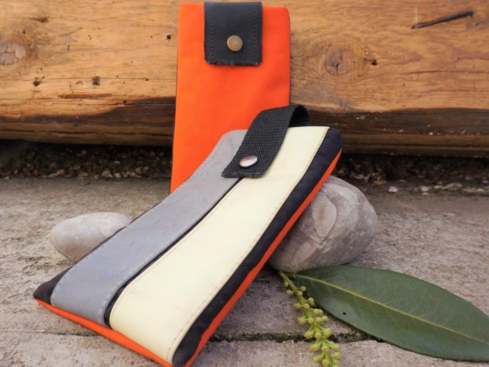

Jedes Werk ist ein mit Liebe und Freude geschaffenes Unikat aus ausgedienter Dienstkleidung der Feuerwehr Aichach. Mit manchmal mehr und manchmal weniger Gebrauchsspuren.
Meine Idee entstand eigentlich spontan beim gemütlichen Sektchen schlürfen mit Freunden. Nicht der Sekt war schuld (könnte man fast meinen, wenn man in meinen Keller schaut), sondern eine interessante Information über ausgediente Feuerwehrkleidung. Da ich sowieso schon länger auf der Welle der Nachhaltigkeit schwimme und eine Freundin des Wiederverwertens scheinbar nutzloser Stoffe bin, handelte ich sofort.
Oft entsteht auch eine produktive Zusammenarbeit mit meinen sehr kreativen Kunden. Das mit Liebe neugeschaffene Einzelstück dann in meinen Händen zu halten und die Vorfreude es meinen Kunden zu übergeben - ein bewegendes und spannendes Gefühl, dass mir immer wieder bestätigt das Richtige zu machen. Ich liebe meine Arbeit.
Was man alles aus ausgedienter Feuerwehrkleidung machen kann, wird bei Manuela Montag in kreativer und individueller Art Handgefertigt !!! Es werden Sonderwünsche gefertigt wo Qualität & Preis stimmen 👍🏻 Nehme immer sehr gerne meine Kochschürze und Handschuhe zum arbeiten her....Nicht nur für jeden Feuerwehrler......sondern auch als Geschenk für jeden der etwas qualitativ hochwertiges schätzt 👍🏻 Werde wieder bestellen. LG
Ich habe mir eine individuelle Tasche aus Feuerwehrkleidung anfertigen lassen. Die persönliche Beratung und das Erstellen der Tasche nach meinen Vorstellungen haben mich überaus begeistert, und Preis-Leistung ist spitze! Vielen Dank! Sehr zu empfehlen.
Manuela hat mir eine "Hundeutensilien" Tasche nach meinen Wünschen angefertigt. Das Material ist aus Feuerwehrstoff und super strapazierfähig. Kann sie auch waschen. Trage die Tasche schräg umhängend und sie ist super bequem und es hat alles (und mehr) Platz was ich benötige. Die Lieferzeit betrug nicht mal eine Woche und der Preis war völlig in Ordnung. Ich würde jederzeit wieder bestellen.
Normalerweise ernte ich für meine Ideen und Vorstellungen skeptische Blicke – hier nicht! Gemeinsam haben wir an der Umsetzung meiner groben Idee für meine Zeichentasche getüftelt. Ich habe super Anregungen und Verbesserungsvorschläge erhalten und am Ende wurde aus meinen ersten wirren Angaben die perfekte Verpackung für mein ganzes Zeichenequipment kreiert. Das Ergebnis hat mir schon mehrere neidische Blicke eingebracht. Die Umsetzung war sicher nicht ganz leicht und auf jeden Fall sehr aufwendig. Super Verarbeitung und ein mehr als fairer Preis!
Manuela Montag - eigentlich wollte ich immer schon Schneiderin werden, bin dann allerdings Schauwerbegestalterin und sogar Hauswirtschafterin geworden. Bin Laden von drei wundersamen Kindern und hauptberuflich im Büro unseres Baubetriebes tätig und um ehrlich zu sein: ich bin süchtig nach Kreativität egal in welcher Form. Freue mich auf jeden Kundenwunsch!
Liebe Grüße,
Manuela Montag